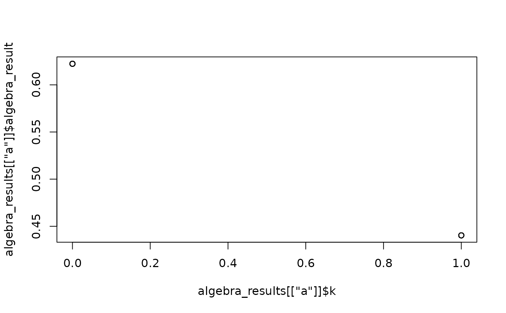

get_individual_algebra_results
Source:R/get_individual_algebra_results.R
get_individual_algebra_results.Rdevaluates algebras for each subject in the data set. This function is useful if you have algebras with definition variables (e.g., in mnlfa).
Value
a list of data frames. The list contains data frames for each of the algebras. The data frames contain the individual specific algebra results as well as all definition variables used to predict said algebra
Examples
library(mxsem)
set.seed(123)
dataset <- simulate_moderated_nonlinear_factor_analysis(N = 50)
model <- "
xi =~ x1 + x2 + x3
eta =~ y1 + y2 + y3
eta ~ {a := a0 + data.k*a1}*xi
"
fit <- mxsem(model = model,
data = dataset) |>
mxTryHard()
#> Running untitled3 with 20 parameters
#>
#> Beginning initial fit attempt
#> Running untitled3 with 20 parameters
#>
#> Lowest minimum so far: 206.07381213759
#>
#> Solution found
#>
#>
#> Solution found! Final fit=206.07381 (started at 1259.055) (1 attempt(s): 1 valid, 0 errors)
#> Start values from best fit:
#> 0.860279356446424,0.93310011519778,0.818073620425412,0.917510125303794,0.0504725154057915,0.0290778597775934,0.0469073044162057,0.0419027627433044,0.0380640418077413,0.0293279504853111,0.806082523552278,0.191196377322578,0.0225271379783757,0.00927744170851602,-0.017906134668413,0.0495250696343279,-0.00882794910402525,0.0257245363438889,0.622360649597024,-0.181971897354282
algebra_results <- get_individual_algebra_results(mxModel = fit,
progress_bar = FALSE)
# the following plot will only show two data points because there is only
# two values for the definition variable k (0 or 1).
plot(x = algebra_results[["a"]]$k,
y = algebra_results[["a"]]$algebra_result)
